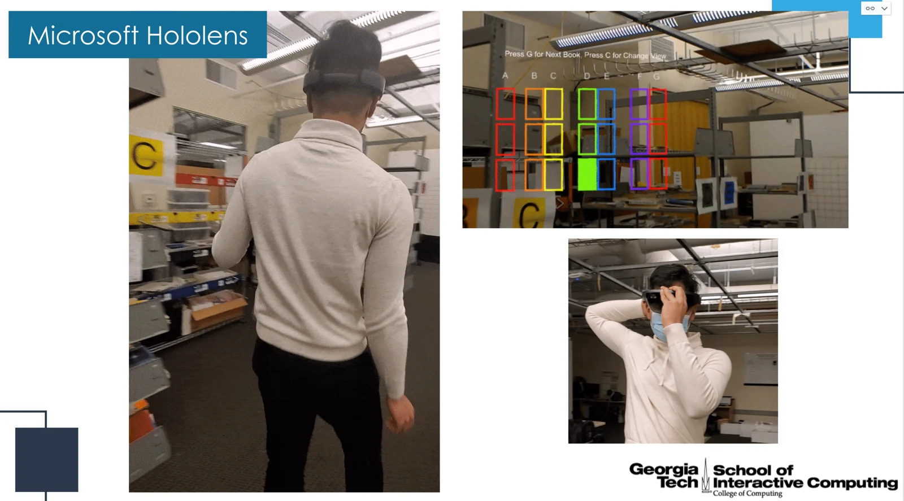
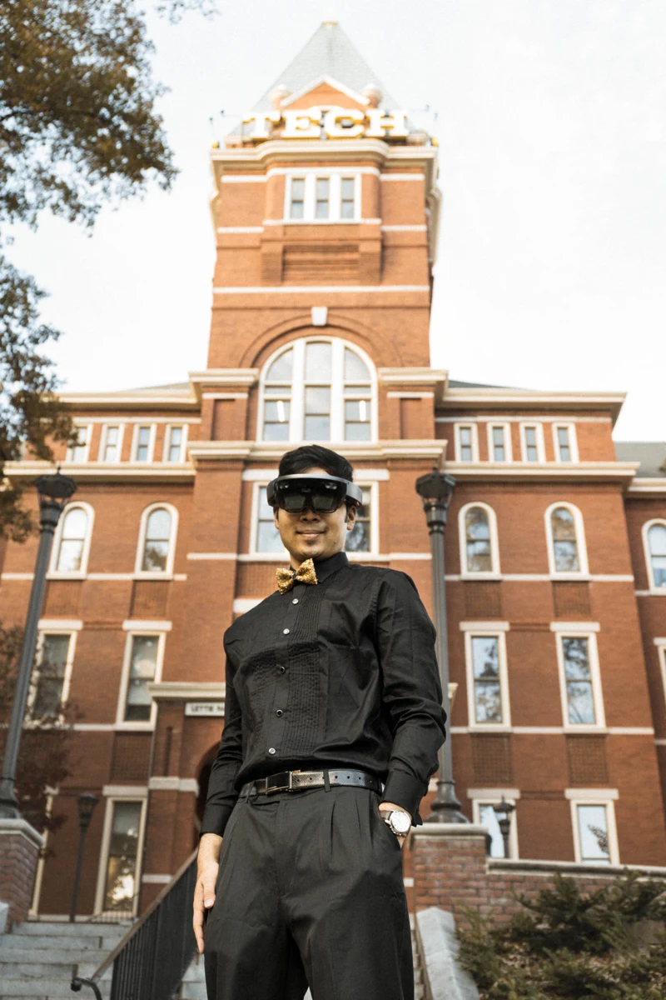
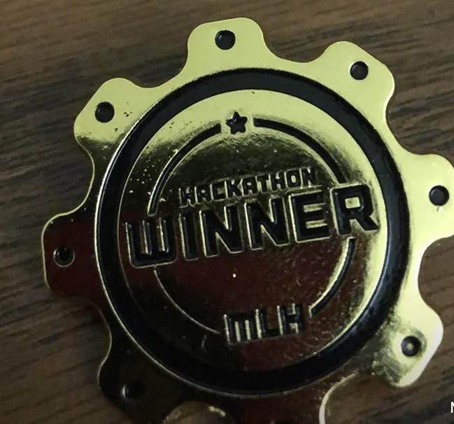
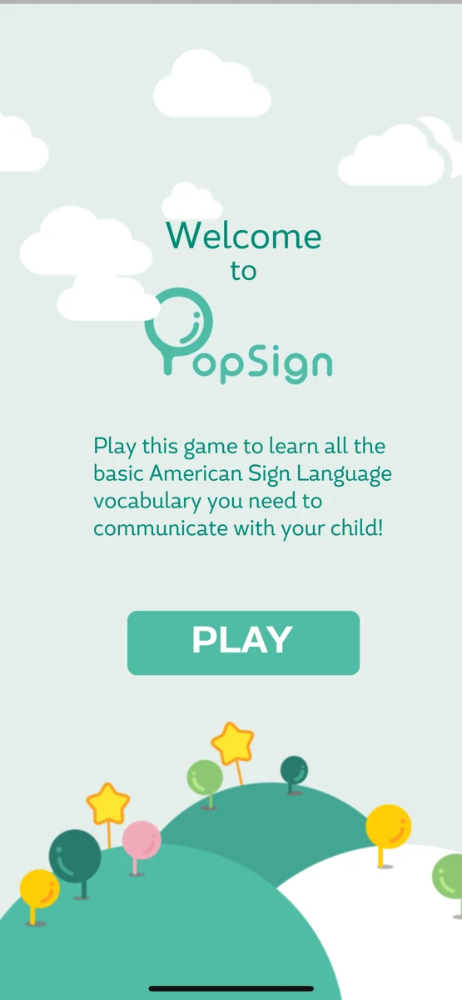
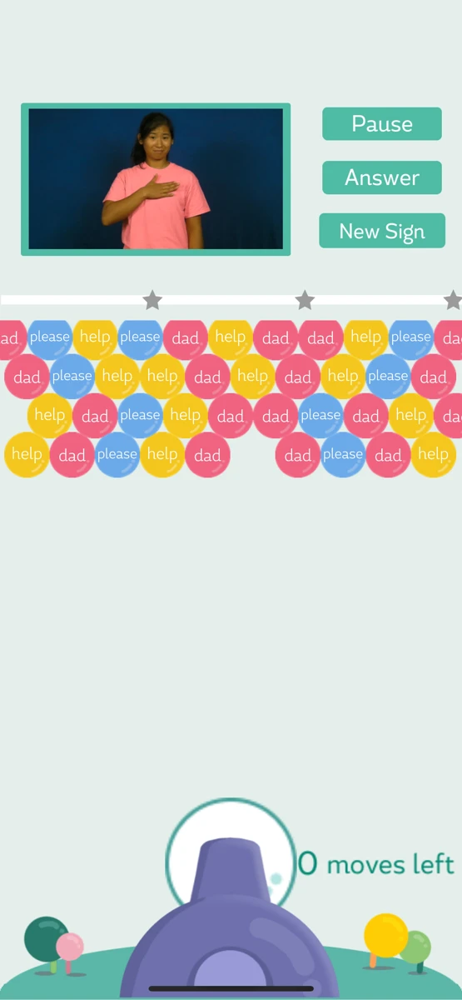

From adding diagnostics for the card that opens an App Clip to most recently helping bring Safari to Apple HomeView.
02Research, 2020 to 202202 / 07
Comparative Order Picking Guidance with HWDs
Which gets you to the right bin faster: a headset or a sheet of paper? In Thad Starner’s lab at Georgia Tech, we trained twelve people to pick items from a shelf. We compared a paper list with instructions on HoloLens, Magic Leap One, and Google Glass.

Our lab shelf, with the view through HoloLens in the middle.
Paper sometimes won. Two likely reasons: how much the headset weighed and how much of the shelf you could see at once.
I co-authored the paper for HotMobile 2021 and wrote my undergraduate thesis on the study.
A headset camera’s view, with the hand tracked in green.
AI Through Symbiosis
After the headset study, Devansh Ponda, Max Zuo, and I worked with Thad Starner on catching picking mistakes as they happen. Warehouses usually confirm a pick by scanning a barcode, which is slow. We used a headset’s camera to watch each pick and learn what every item looks like as it is picked again and again. Pickers are already right about 98% of the time, so the system can learn from them without anyone labeling data, then warn them when a pick looks wrong. The lab calls this symbiotic AI: the computer learns a task from the people doing it, then helps them do it. The project was further research to prove the usefulness of vision-language-action models, which take what a camera sees, along with an instruction, and decide what to do.
Find five bins using the paper list, then switch modes and follow the highlighted bins. This is a browser demo, not the lab study. The clock starts on your first pick.
A sample list. Press Start for yours.
Paper
—
Heads-up
—
03Education03 / 07
Georgia Tech, 2018 to 2022
I graduated with a B.S. in computer science, a 3.91 GPA, and highest honors. At Georgia Tech, I taught algorithms, ran the iOS Club, co-founded the Mixed Reality Club, and co-authored a research paper.

Outside Tech Tower with one of the headsets from my thesis.
Head TA, Design & Analysis of Algorithms
I was head teaching assistant for CS 3510. The course channel still has our recorded recitations and exam reviews.
I mentored first-years in the Grand Challenges program. I also chaired external relations for Omicron Delta Kappa.
04Side projects04 / 07
College projects
These took a weekend or a semester: a game for families learning American Sign Language, a Google Glass prototype that names objects, and two experiments in augmented reality. One won its track at HackGT, and two placed second.

My hackathon medal from Major League Hacking.


2022 · iOS · team of ten
Pop Sign Learning
We made Pop Sign for hearing families learning American Sign Language. To aim a bubble, you match its color to a sign on screen. I led the ten-person iOS team. The game placed second at the iOS Club’s 2022 Demo Day and came out on iOS.
HackGT 2020 · Google Glass · digital medicine track winner
Heimdallr
At HackGT 2020, Jon Womack, William Cooper, and I built a Google Glass prototype that names the object a child is looking at. We made it for children with autism practicing vocabulary outside therapy.
At my first HackGT, Jon Womack, Georgianna Lin, Andrew C., and I built a HoloLens app for spatial social media. People could share a bio, recognize familiar faces, and leave posts in the real world for others to find and interact with.
I grew up in Bhubaneswar, the capital of Odisha in eastern India. Infosys picked me for its summer program, where ninth-graders learn to build software. I kept making apps through the rest of school.
In 2016, I was one of 30 students from Odisha selected for the Indian National Mathematical Olympiad. Two years later, I was one of 106 students across India to reach the national round of the Indian Computing Olympiad. Two classmates and I won the Atal Tinkering Lab hackathon. I also placed third in the TCS IT Wiz quiz and reached the national finals of the CBSE Science Exhibition.
I moved to Atlanta to study computer science at Georgia Tech. In Thad Starner’s lab, I co-authored a paper on head-worn displays and wrote my thesis. Outside the lab, I became head teaching assistant for algorithms, led the iOS Club, and co-founded the Mixed Reality Club. In 2022, I graduated with highest honors and received the College of Computing’s Outstanding Legacy Leadership Award.
2019
IIT Bhubaneswar
I spent the summer after my first year of college back home, doing research at IIT Bhubaneswar.
2020
NCR
Apple announced App Clips that June. At NCR that summer, I built one that let diners order without installing a restaurant app. The app behind it already handled more than 200,000 orders a day for over ten restaurant companies.
I joined Apple full time. In my first two years, I shipped Reading List widgets, Safari Profiles, Listen to Page, and AI summaries.
2026
Harvard
I was one of 30 students admitted to Harvard’s joint M.S./M.B.A. in Engineering Sciences and a Dupré Nunnelly Fellow. I joined Section B at the business school and pursued both degrees while working full time at Apple. I left before finishing.
Now
Apple
My current work hasn’t been released, so it isn’t included here.
06Index06 / 07
Papers, projects, and coverage
Search my papers, projects, and the articles about my work.
07Contact07 / 07
Write to me
If there’s something here you’d like to talk about, send me an email. I read every note.